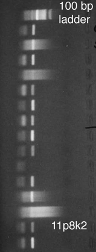
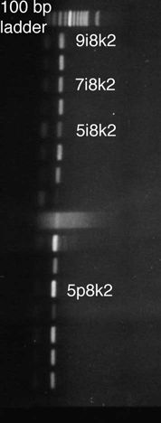

|
Samples were collected on 5-7 November 2002 from sediments near San Felipe, Baja California, Mexico. Nematodes were extracted alive by sieving and decantation, mounted on ringed fluorescence slides, heat-paralysed for 5 seconds at 65 C*, and video-captured on a compound microscope equipped with DIC optics. After recording of movements and multifocal series of the most important body parts, individual nematodes were removed from the slides and prepared for PCR with primers for the small subunit rDNA gene and/or the D2/D3 expansion segments of the large subunit rDNA gene. In this particular batch, we processed 79 nematodes, of which 6 were lost during manipulation. Of the 73 obtained DNA extracts, so far 38 have been subjected to PCR and all yielded products detectable with electrophoresis. These PCR products are currently being sequenced for the NemATOL database. *: With thanks to Peter Mullin for suggesting immobilization by heating |
Gels showing PCR product of the five specimens below, obtained with primers for the D3 expansion segment.  |
 |
copyright 2002